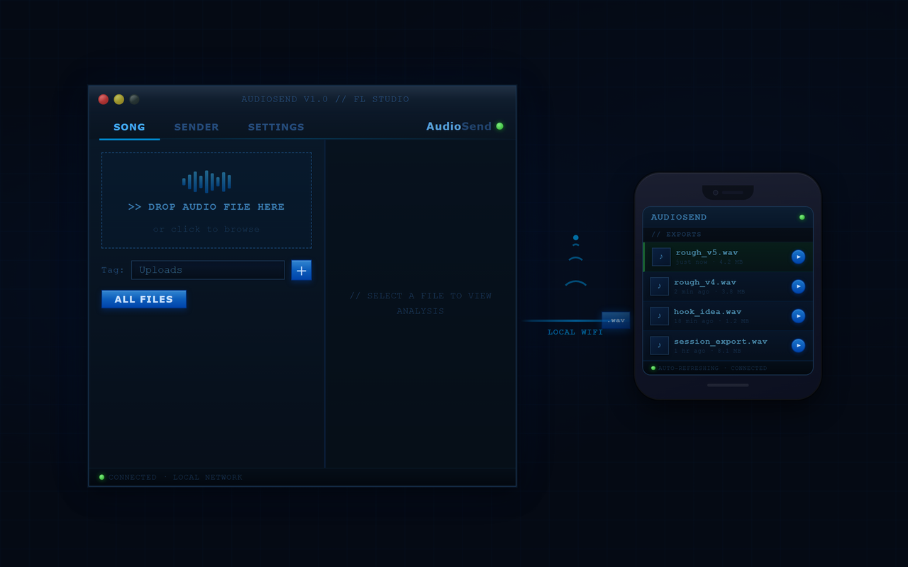

AudioSend · VST3 plugin for Windows
Hear your mix on your phone without leaving the session.
Drop an export into the plugin, scan the QR code, and it plays in your phone's browser over local Wi-Fi.
- LUFS and true-peak readout for every file
- No cable, no cloud upload, no app install
- Open source under AGPLv3
Download from GitHub
Free · Windows only
